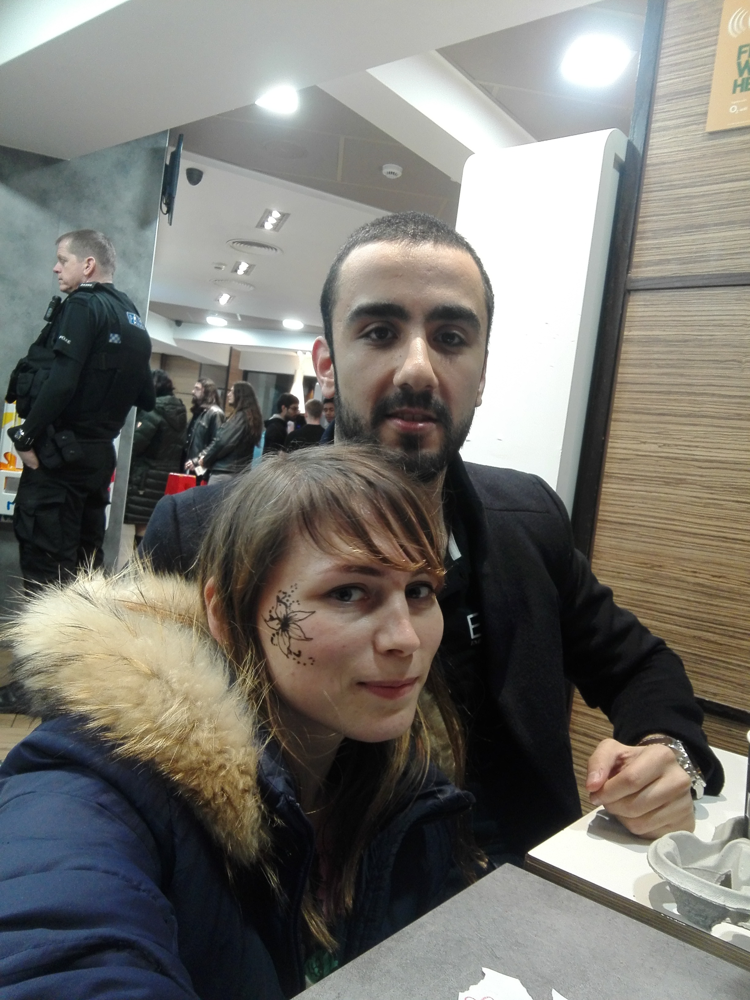
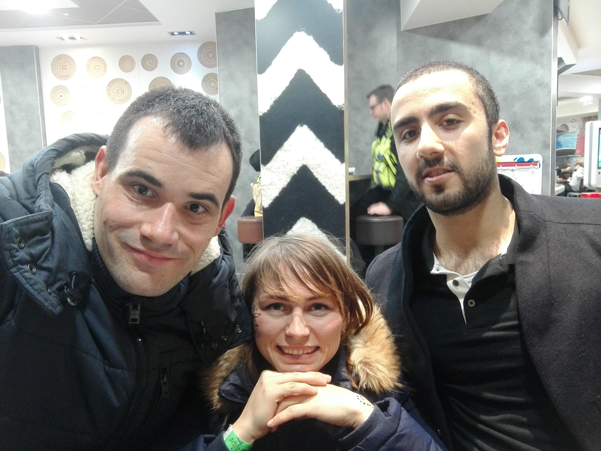

A personal account and reflection
During my time studying for my Master’s degree in the UK, I went through a personal experience that deeply shaped how I think about trust, respect, and boundaries. It was a relationship that left me feeling confused and hurt. I trusted a person who was kind at the first glance, and I believed that I found a person with whom I could share my values. Unfortunately, I was left deeply wounded by what happened. It was a traumatic experience that still stays with me — something that changed my view on men and revealed how badly things can go. I didn’t expect this; I was just too young and innocent. At the time, I felt that my trust had been broken and my emotional safety affected in ways I did not anticipate. This is a personal account — my perspective, thoughts, and feelings — and is not intended to make factual claims about any other person. My purpose in sharing is to raise awareness about the importance of empathy and respect in relationships. The person whom I trusted showed that he was intrested in me as his potential girlfriend. Things were intened just to fullfill his curiousity. The person was playing games, and wanted to just have some sexual experience, and nothing else.
I believe that speaking openly — even in a careful and respectful way — can help reclaim one’s voice. This reflection is part of my journey to acknowledge my past and move forward. If you have experienced something similar, please know that your feelings are valid and your story matters.

